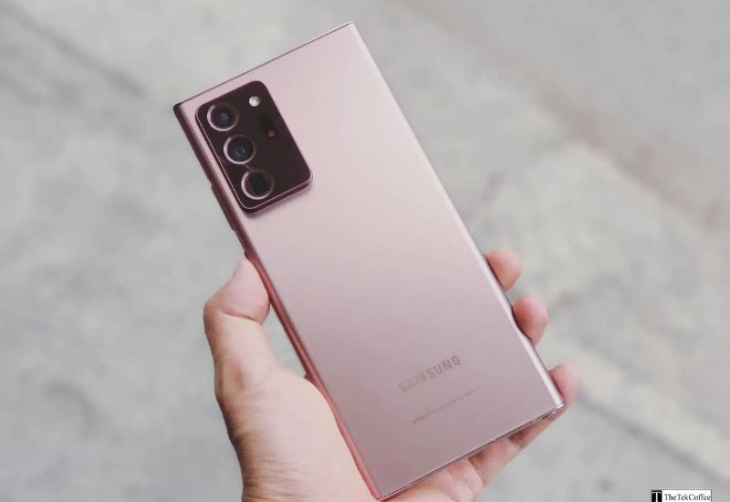
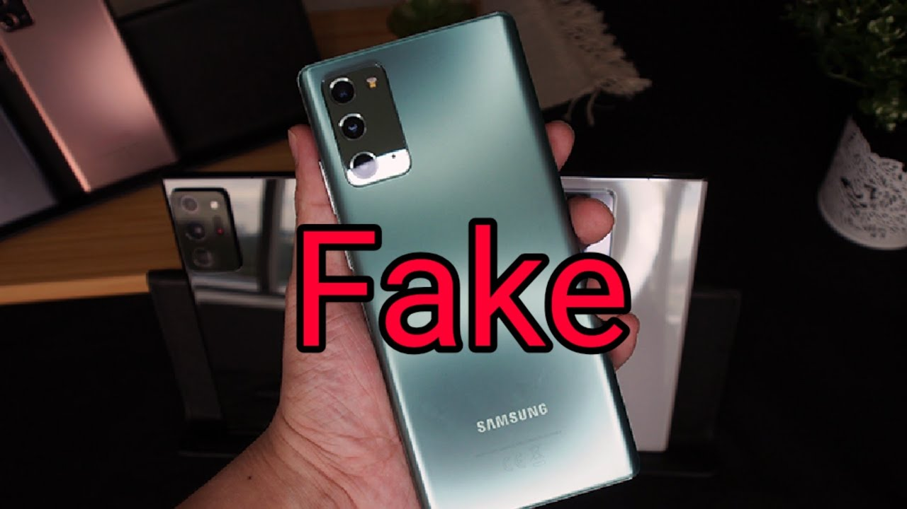
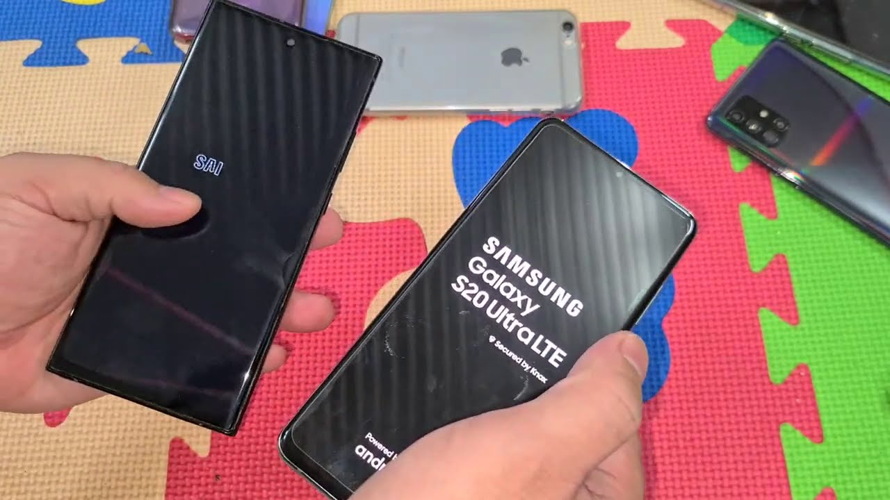

Phân biệt màn hình Note
20 Ultra zin và fake - Cách nhận biết chính xác
Việc phân biệt màn
hình Note 20 Ultra zin và fake là vô cùng quan
trọng để đảm bảo chất lượng và trải nghiệm sử dụng điện thoại
tốt nhất. Thuận Phát Mobile sẽ cung cấp những kiến thức cơ bản
về đặc điểm của màn hình zin và fake, đồng thời hướng dẫn bạn
cách kiểm tra để phân biệt hai loại màn hình này. Ngoài ra,
bài viết cũng đưa ra những tiêu chí lựa chọn địa chỉ thay màn
hình uy tín để giúp bạn bảo vệ chiếc điện thoại của mình.
Hiểu về lỗi cáp màn Samsung Note 20 Ultra
Lỗi cáp màn hình là một trong những sự cố phổ biến mà người dùng điện thoại thông minh, đặc biệt là dòng cao cấp như Samsung Note 20 Ultra, thường gặp phải. Khi xảy ra lỗi này, trải nghiệm sử dụng thiết bị sẽ bị ảnh hưởng nghiêm trọng, gây ra nhiều bất tiện cho người dùng.
Đặc điểm của màn hình Note 20 Ultra zin
Màn hình zin của Samsung Note 20 Ultra có những đặc điểm nổi bật sau:
Chất lượng hiển thị: Đây là yếu tố quan trọng nhất để đánh giá màn hình zin. Màn hình zin Note 20 Ultra sở hữu công nghệ hiển thị tiên tiến, mang đến hình ảnh sắc nét, màu sắc trung thực và độ tương phản cao. Người dùng sẽ cảm nhận được sự sống động và chân thực trong từng khung hình.

Độ sáng và màu sắc trên màn hình zin được cân chỉnh chính xác, tạo nên trải nghiệm thị giác thoải mái, không gây mỏi mắt. Màu sắc được tái tạo trung thực, không quá rực rỡ hay quá nhạt nhòa.
Cảm ứng mượt mà là đặc trưng của màn hình zin. Các thao tác chạm, vuốt, kéo thả được thực hiện trơn tru, không bị giật lag. Tốc độ phản hồi nhanh giúp người dùng sử dụng điện thoại một cách thuận tiện và hiệu quả.
Logo và thông tin in trên màn hình là chi tiết nhỏ nhưng quan trọng. Màn hình zin thường có logo Samsung sắc nét, không bị mờ nhòe. Các thông số kỹ thuật in trên màn hình chính xác và rõ ràng.
Đặc điểm của màn hình Note 20 Ultra fake
Màn hình fake của Samsung Note 20 Ultra thường có những đặc điểm sau, khác biệt đáng kể so với màn hình zin:
Chất lượng hiển thị của màn hình fake thường kém hơn hẳn so với màn hình zin. Hình ảnh mờ nhạt, thiếu chi tiết, màu sắc không chính xác. Góc nhìn hẹp cũng là một nhược điểm của màn hình fake.

Độ sáng và màu sắc trên màn hình fake thường không đồng đều, có thể xuất hiện các điểm sáng hoặc tối bất thường. Màu sắc bị lệch, quá rực rỡ hoặc quá nhạt nhòa, gây khó chịu cho mắt.
Cảm ứng chậm, lỗi là tình trạng thường gặp trên màn hình fake. Người dùng có thể gặp phải hiện tượng chậm phản hồi, liệt cảm ứng hoặc loạn cảm ứng. Điều này ảnh hưởng nghiêm trọng đến trải nghiệm sử dụng điện thoại.
Logo và thông tin in trên màn hình thường không chính xác trên màn hình fake. Logo Samsung có thể bị mờ, lệch hoặc sai kích thước. Các thông số kỹ thuật in trên màn hình có thể bị sai sót hoặc không rõ ràng.
Cách phân biệt màn hình Note 20 Ultra zin và fake

Phân biệt màn hình Samsung Note 20 Ultra zin và fake có thể khó khăn nếu bạn không biết những dấu hiệu cụ thể. Dưới đây là một số cách giúp bạn nhận biết:
Kiểm tra ngoại hình
Đây là bước đầu tiên để phân biệt màn hình zin và fake. Quan sát kỹ bề mặt màn hình, xem có vết xước, nứt vỡ hay bất thường nào không. Kiểm tra độ đồng đều của màu sắc và độ sáng trên toàn bộ màn hình.
Kiểm tra chất lượng hiển thị
Việc So sánh hình ảnh hiển thị trên màn hình cần kiểm tra với một màn hình zin để đánh giá độ sắc nét, màu sắc, độ tương phản. Chú ý đến các chi tiết nhỏ như văn bản, hình ảnh để phát hiện sự khác biệt.
Kiểm tra độ nhạy cảm ứng
Kiểm tra bằng cách thực hiện các thao tác chạm, vuốt, kéo thả trên màn hình. Nếu cảm thấy chậm trễ, giật lag hoặc không chính xác, khả năng cao là màn hình fake.
Kiểm tra thông tin trên màn hình
Mục địch để xác định tính chính xác. So sánh logo Samsung, thông số kỹ thuật với màn hình zin. Nếu có bất kỳ sai lệch nào, màn hình đó có thể là fake.
Địa chỉ thay màn Samsung Note 20 Ultra uy tín ở đâu?
Để đảm bảo chất lượng dịch vụ và độ bền của thiết bị, bạn nên lựa chọn các trung tâm sửa chữa điện thoại uy tín và có kinh nghiệm. Khi chọn địa chỉ sửa chữa, cần lưu ý các yếu tố sau:
-
Kinh nghiệm: Trung tâm có kinh nghiệm trong việc sửa chữa các dòng điện thoại cao cấp, đặc biệt là Samsung.
-
Linh kiện chính hãng: Sử dụng linh kiện chính hãng để đảm bảo thiết bị hoạt động ổn định và bền bỉ sau khi sửa chữa.
-
Chế độ bảo hành: Trung tâm cung cấp chế độ bảo hành rõ ràng, minh bạch cho dịch vụ sửa chữa.
-
Đội ngũ kỹ thuật viên: Có đội ngũ kỹ thuật viên chuyên nghiệp, tay nghề cao và hiểu rõ về thiết bị.
-
Phản hồi của khách hàng: Tham khảo ý kiến từ khách hàng đã sử dụng dịch vụ của trung tâm để có quyết định chính xác.
Việc lựa chọn một trung tâm sửa chữa uy tín là cần thiết khi sữa màn hình Samsung Note 20 Ultra. Để đảm bảo chất lượng dịch vụ và linh kiện chính hãng, hãy nghiên cứu kỹ trước khi quyết định.
Thuận Phát Mobile tự hào là một trong những trung tâm sửa chữa điện thoại Samsung uy tín hàng đầu tại Việt Nam. Với việc sử dụng linh kiện màn hình chính hãng, được phân phối trực tiếp từ Samsung, Thuận Phát Mobile cam kết mang đến dịch vụ sửa chữa chất lượng cao nhất, giúp khách hàng hoàn toàn yên tâm về độ bền và hiệu suất của thiết bị sau khi sửa chữa.
Với cam kết cung cấp giải pháp tối ưu và giá cả cạnh tranh, các vấn đề như lỗi cáp màn hình trên Samsung Note 20 Ultra hay Samsung Note 20 Ultra bị trắng màn hình sẽ không còn là nỗi lo khi bạn chọn Thuận Phát Mobile. Chúng tôi tự hào đồng hành cùng bạn, mang đến trải nghiệm dịch vụ chất lượng cao và sự hài lòng tuyệt đối trong mỗi lần sử dụng.
Qua bài viết này, hy vọng bạn đã nắm được những phương pháp đơn giản và chính xác nhất để phân biệt màn hình Note 20 Ultra zin và fake. Hãy chia sẻ thông tin về Thành Phát Mobile với bạn bè và người thân để cùng nhau kiểm tra và đảm bảo rằng màn hình điện thoại Samsung của mình luôn hoạt động tốt và không gặp phải lỗi. Chúng tôi luôn sẵn sàng hỗ trợ bạn và người thân trong việc duy trì sự chất lượng và hiệu suất của thiết bị!